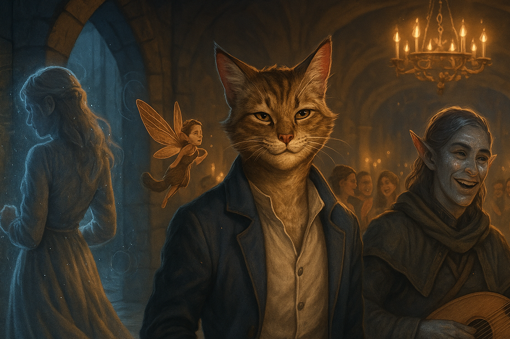

The Invisible Spell
Rugatha Legends

Rugatha Legends
Day 1
斑貓人獰、仙靈蓋蓋與星界精靈赫里安（簡稱赫寶）是熟識的朋友。他們受邀參與當地貴族 Bridgeworth 家的婚禮，但他們與新郎或新娘的家族都沒有認識，因此對於為何被邀請，他們也不清楚。
婚禮後的派對十分熱鬧，除了新郎與新娘外，普遍都是相貌十分吸引人的年輕男女。獰和蓋蓋決定利用這個機會好好認識些美女，也許有機會可以讓這個晚上變得更美好。另一方面，赫寶背著他的烏克麗麗，品嚐著華而不實的餐點：視覺上，他們精緻典雅又吸引人，味道卻平庸至極。
獰與蓋蓋決定冒險，來到宴會廳旁的女廁碰碰運氣。身形較小又會飛的蓋蓋利用他的優勢，飛到了天花板，這個視角很不錯。獰在洗手台整理儀容，同時與身邊遇見的女子聊天。這女生相貌中上，肯定還有更好的選擇。不過獰也在與這名女子對話後，得知他自稱為「我小姐」。（獰不確定這是不是針對他的名字「獰」與「您」的諧音，開的玩笑，但反正對方也只是個還行的女生，沒什麼好失去的。）
在廁所待了十來分鐘，獰和蓋蓋也沒有遇到其他他們中意的女生，於是決定離開廁所，重新擬定戰略。廁所外，赫寶正站在門口等他們出來。三人會和後聊了一會兒。這時，一對外表出眾的男女朝著他們笑嘻嘻地走來了，他們兩人很顯然的都喝醉了，而且以他們的穿著，很顯然是這場婚宴的伴郎與伴娘。獰定睛一看，這名女生不僅漂亮，還完全打中他所有的點，簡單兩個字概括他：天菜。
眼看這對朝著他們走來，喝醉的男女就要抱在一起，獰順手的支開了男子，將這名女子摟入懷中，技巧熟練而滑順。女子倒入他的懷中，似乎沒有注意到自己已經換了個伴。而男子則一頭霧水，懷中的人就這樣被摸走，他也只好悻悻然地摸摸鼻子就走。
獰看女子沒有刻意抗拒，便將他帶往他位於二樓的客房，愛看好戲的蓋蓋也跟了上去。赫寶決定待在會場。眼看宴會廳的小舞台上沒有人在使用，赫寶走了上台，演奏了一首浪漫的樂曲，舞台下的觀眾越來越多，轟動的掌聲為他的樂曲畫下了完美的句點。
赫寶鞠躬下台，一名身穿正裝的男子攔住了他。他自稱是一名經紀人，希望與赫寶合作。赫寶委婉的拒絕了，僅收下他的名片，上面寫著 Mr. Brian Black，經紀公司是 the Black Factory。
二樓的客房，女子躺在床上，很顯然喝醉的他不清楚發生什麼事。蓋蓋一如往常地找了個好位子：水晶燈上的平面，準備好好觀賞接下來的好戲。獰熟練的確認女子的狀況後開始愛撫與親吻……兩個小時很快地就過去了。
台下，赫寶接受了英雄式的熱烈歡迎，觀眾們對於這名低調的藝人十分好奇。得知了赫寶的名字後，他們紛紛開始自稱「赫粉」，並嘗試跟隨著他。赫寶決定趕緊跑回三樓的客房，以免這晚變得太混亂。他對自己有很嚴格的標準的。
Day 2
獰發現昨晚屬於那名女人的香氣不見了。不，連人都不見了。
天菜女子留下他的伴娘裝在獰的房間，憑空消失了。不過奇怪的是，這身伴娘裝上的味道，與昨晚並不一樣。獰感到疑惑，究竟是發生了什麼樣的怪事？是人被交換了？憑空消失了？還是……
「應該是裸奔走了吧？」蓋蓋說。
獰與蓋蓋和赫寶在樓梯間會合，一同回到宴會廳用早餐。
茫茫人海中，獰尋找著熟悉的身影。那裡。
身穿不同服中，但那一定是那女人。天菜只要看過就會牢牢印在腦海內的。
獰趕緊上前與女子攀談。女子態度十分禮貌，獰詢問他是否記得昨天晚上的事，他也不反駁，但就……有些距離感。他身上的味道也和昨晚不同，比較像今天在床上遺留的伴娘裝的味道。
尷尬的對話後，獰回到座位與他的朋友們吃早餐，同時，他隨時盯著女子的動靜。不久後，獰看見女子離開了宴會廳，便趕緊離開，悄悄跟在後方。女子離開了舉辦婚宴的旅店向外走，繞到了附近的巷弄之中。附近沒有其他人，因此獰決定上前去搭話（他的兩名朋友為了確保他的安全，也跟隨在後面更遠一點的距離）。
女子看見獰，嚇了一跳。他表示自己要回家了，而他就住在前面巷子口繞進去而已。獰矇騙他自己也住在附近，表示要送他回到家。女子有些尷尬，只好順著往他家走去。停在家門口，女子向獰揮手再見，獰堅持要看見女子走進家內，女子卻始終不進入。赫寶與蓋蓋上前解危，但在獰轉頭後，他們卻看見了驚人的一幕—女子朝著遠方跑去，邊跑邊將身上的衣服脫掉，丟在地上，而他的身體逐漸透明化直到消失。
獰無法理解自己看到的是什麼？甚至，這名女子是不是人類，他也不知道了……他想起這名女子是婚禮上的伴娘，那他肯定是新娘的朋友。
三人折返回到旅店，看見新婚的 Bridgeworth 夫妻正在用餐。獰與 Bridgeworth 太太 Camila 打了聲招呼。他先好奇詢問他們為何受邀，但夫妻兩人也都不清楚，參與婚宴的名單是他們的父母安排的，也許他們與夫妻的父母認識也說不定。接著，獰問起了他的天菜，這名伴娘小姐。從 Camila 口中，他得到了他的名字：Ellen。
獰向 Camila 提出想認識 Ellen 的要求，Camila 表示他對獰不認識，便邀請他下午參與他與好姐妹們的下午茶會，讓他好好認識獰一番。獰決定利用中間的時間好好的採買與扮裝，讓自己體面一些。
三人利用中午前後的時間，做了簡單的採買，很快就到了約定的下午茶時間。（蓋蓋還買了咖啡色的油漆，把自己浸在裡頭，這讓他的翅膀僵化了，因此這段時間他無法飛行。）三人回到了旅店門口，Camila 與他的姐妹們一行人便帶著他們朝著咖啡廳走去。
咖啡廳內，大家各自點了喜愛的飲品，Camila 也額外點了幾份甜點塔與大家分享。Camila 的好姐妹們聊著八卦，也時不時與獰詢問關於他的事。最終，獰得到一些情報：這名 Ellen 十分神秘，但也十分聰明，他與 Camila 是在圖書館的魔法書區認識的。而更重要的，Ellen 每天中午都會出現在魔法書區，從不缺席。獰得到了有用的情報，這頓下午茶值了。
下午茶後，三人決定先去圖書館場勘。魔法書區在圖書館二樓，藏書不算很多，但有點雜。有些比較簡單，甚至偏向介紹的書，也有很艱深的咒語書，另外甚至有介紹魔法的童書。獰向赫寶從書上學了簡單的香氛魔法，成功變出了他與天菜相見那晚，天菜身上的味道。同一時間，蓋蓋到了自然書區，尋找關於仙靈相關的書。他很好奇為何在城鎮內從未看過其他仙靈。獰也從一本複雜的魔法書後的借書紀錄上看見了一個名字：E. M. Sage。這應該是 Ellen 的全名吧？Ellen M. Sage。
離開圖書館，獰在圖書館門口撞見了昨晚認識的我小姐。我小姐邀請三人一起共進晚餐，於是他們在附近的小酒館吃飯。我小姐對魔法也有些涉略，雖然本身不會施放魔法，但他因為有興趣，也加入了當地的魔法公會。獰感到有些興趣，因此他們說好晚餐後去魔法公會看看。不過魔法公會的入會費十分高昂，每個月要繳交 10 枚金幣，除非用特殊案例的方法暫時加入，每個月只要繳 2 枚金幣即可。當然，還有第三種做法，就是用高超的魔法技巧證明自己的實力，便可以以榮譽會員的身份免費入會。
酒館內，赫寶用餐用的十分焦躁。店內的吟遊詩人彈奏的曲子都是他熟悉的曲子，問題是，所有不該錯的地方他通通都彈錯了！當吟遊詩人彈完後，他主動詢問是否有人要點歌，赫寶便點了一首他知道需要技巧的樂曲，吟遊詩人便開始彈奏了起來。光是前面簡單的段落就錯得離譜到不行，赫寶暗自希望中間困難的段落，吟遊詩人可以錯到讓全場觀眾噓他下台。但很意外的，這段困難的段落，吟遊詩人竟然順暢地彈完，赫寶也沒辦法說什麼了。吟遊詩人彈完後，瀟灑的鞠躬下台，到吧台與酒保聊天。
赫寶看見舞台空了，得到酒保的同意後便上台表演。他的表演十分順暢而好聽，觀眾們都十分喜愛，甚至賞了他一些小費。赫寶鞠躬下台後回到座位。不久後酒保送來了一杯特殊的酒，說是名為 Julio 的吟遊詩人請他的。這杯酒十分漂亮，透明的粉紅色，裡頭飄有一些花瓣，但更令赫寶滿意的，是插在酒杯上小陽傘造型的裝飾。他取下裝飾，讓他的朋友們將酒喝完。
晚餐後，三人跟著我小姐走過複雜的路，終於來到了魔法公會。這裡看起來像是個破舊的老宅，裡面甚至是全黑的。我小姐用特定的節奏敲門，幾秒後一名老婆婆把門打開了。我小姐表示獰是他帶來的，老婆婆點點頭後就讓他們進去了。
老宅外，赫寶很清楚知道他們沒有被邀請入內，也就乖乖在外面等了。頑皮的蓋蓋在附近找任何可以潛入的入口，最終他撬了窗戶，進了屋子，甚至把窗戶開的大到赫寶也能進去，但赫寶一樣維持他的原則，不擅自侵入。蓋蓋在一樓探索了一圈，裡面全黑，門口處一座搖椅上，老婆婆搖晃著。蓋蓋找到了許多可能是暗門的機關，卻沒有找到任何能潛入的開口。最終，他決定離開這裡。回到窗戶口，蓋蓋小心翼翼地將窗戶恢復原位，卻不小心發出了噪音。霎時間，他看見老婆婆雙眼圓瞪，從窗戶口盯著他們看。蓋蓋嚇到趕快關上窗戶。他沒有要再潛入的打算了。
我小姐從一樓婆婆背後的地板翻起了暗門，帶著獰走入了燈火光明的地下室。十幾個人在這個空間內輕鬆的喝著酒，聊著天。獰與公會的成員們聊著，打聽關於 Ellen 或隱形相關的魔法的消息。他得知，一位名叫 Lucas 的榮譽會員，曾經徒手抓到隱形中的 Ellen 的手腕，他也因此備受公會成員崇拜。另外，他也得知 Ellen 在公會內被他們以「小魔女」為代號指稱。
獰找到了這名 Lucas，和他聊了一下，便知道這名 Lucas 和他十分相似：挺會說話的，但這個人……沒什麼料。事後，他也從其他公會成員那兒聽見了一些傳聞：公會的金主是樓上的婆婆，而 Lucas 是婆婆的金孫，所以才能以榮譽成員的身份加入公會。
Lucas 挺喜歡獰的，邀請他成為公會的榮譽成員，也因為聽見獰的口頭禪：在每句話的最後面都加一個「哎」字，決定效仿，要公會成員們都在每句話後面加個「喵」字，他覺得十分酷炫。
暗門打開，婆婆從樓上走了下來，與一名成員低聲講了幾句話。成員點點頭後，傳話給了獰，說他的朋友們剛剛試圖闖進公會內，要他們小心，否則會被婆婆幹掉。獰聽了嚇了一跳，決定是也該離開了，他已經搜集夠多情報，而且時間也晚了。我小姐在獰離開前，也坦承「我」不是他的本名，他的本名其實是「他」。獰還是不確定到底「他小姐」是不是在開玩笑，但他總覺得這人沒什麼幽默感。
獰與夥伴們在公會外會合，三人說好明天中午要去圖書館找 Ellen，便各自回家休息了。
Day 3
三人在中午前就到圖書館待命了。12:00 整，獰便看見了他心心念念的天菜，Ellen，披著長袍，走向了魔法書區。Ellen 在書櫃前翻了一段時間，最終拿了幾本書，坐到閱讀區，剛好是獰的隔壁座位。
獰先趁 Ellen 注意到他前偷偷觀察了一陣子，然後才搭話。Ellen 看到獰嚇了一跳，但也保持禮貌的和他談了話。獰好奇地問他前一天怎麼突然的就跑了，Ellen 只好承認自己有挺嚴重的分離焦慮。不久後，Ellen 便說他得走了，趕緊抱著一大疊書跑走。獰只好眼睜睜看著他這樣跑走。
對於獰這個進展困難的戀情，蓋蓋感到十分無奈，他想按他看到書上寫的，到離此路程一兩個月的地方去尋找仙靈，但獰還是堅持每天中午都要回到圖書館等 Ellen。蓋蓋提議要去地下水道探險，儘管赫寶不喜歡，他還是陪著他的夥伴們來到人煙稀少的區域尋找能拽開的水溝蓋，與他們一起下去了。
地下水道內，三人看見有不少老鼠，甚至有抓老鼠的陷阱，但除此之外沒什麼特別的。他們繼續往前走，聽見前方傳來了一點聲音。三人繼續往前，看見一名中年的大姐正在做木工，他的身後則有一大堆陷阱。另蓋蓋意外的是，陷阱內，竟然是仙靈。「地下水道有仙靈？」這完全打破了蓋蓋的認知。
大姐看見蓋蓋，撈起身邊的網子，準備捕捉，但卻一直沒抓到。在他放棄後，獰與大姐詢問，得知他平時都在地下水道抓仙靈，定時會去黑市賣仙靈。陷阱內的仙靈們試圖吸引蓋蓋和獰的注意，想和他們做交易。大姐趕緊支開他們，和獰表示與仙靈做交易很危險，自己年輕時已經被騙過了，千萬不要上當。
三人沒有得到什麼太有用的資訊，於是折返回去地面。赫寶對於地下水道的骯髒與惡臭十分崩潰，享用甜點消除這身晦氣，於是三人前往昨天去過的下午茶店。
店內 Camila Bridgeworth 與更大一團的姐妹們正在用甜點，三人與他們簡單打招呼後，便找到了一桌空位入座。三人到櫃檯點了甜點，回到座位後，看見一名熟悉的身影朝著他們走來，那人便是在婚禮當晚與 Ellen 一併喝醉的伴郎男子。從先前 Camila 與姐妹們的對話中，獰得知這名男子叫 Thomas。Thomas 擅自拉了第四張椅子坐了下來，便開始撩他們三人，場面變得十分尷尬。獰數落著 Thomas 那晚對 Ellen 的無理（他也才發現 Thomas 根本不記得 Ellen 的名字），惹得 Thomas 和他下豪賭：他們兩人只要誰和 Ellen 結婚，另一人就要當對方婚禮上的伴郎/伴娘。Thomas 烙下狠話，要獰準備收喜帖，參加他與 Ellen 下週舉辦的婚禮，然後他就走了。
三人用完甜點後準備離開，獰也從 Camila 那裡得知，Camila 安排了明晚獰和 Ellen 的晚餐約會，餐廳在下午茶店隔壁兩家的高級西餐廳。
晚餐前，三人決定跟蹤一下 Thomas。像他這種不可靠的人，肯定有什麼勾當。他們發現 Thomas 來到了蓋蓋長期駐紮的妓院，點了頭牌，包一小時的時段，但似乎五分鐘就繳械了，剩下的只是一連串的空話「我很厲害吧？」還有另獰聽來快氣瘋的「你長得很像我的愛人，他好像叫 Ellen。」（但那名頭牌和 Ellen 長得完全不一樣。）
獰決定今天晚餐先去餐廳場勘。三人來到了西餐廳，因為沒有預約，需要等大約一小時。等待的過程中，獰看見一個熟悉的身影從遠方走來，是他心心念念的 Ellen。Ellen 看見他站在餐廳門口，有些慌張，獰也很慌張。他們兩人心照不宣的不提 Camila 為他們安排的明晚的約會，但獰很清楚這場對話他的表現糟透了。
終於進了餐廳，這裡的價位誇張的高，最便宜的 10 枚金幣的料理就快讓他們吃到破產了。想著明天要和 Ellen 在這裡約會，甚至獰不確定自己該不該出兩人的餐費，還是應該要 AA 制。他只知道自己在明天晚餐前需要搞到點錢。就算是非法的可能也得列入考慮。
三人想起稍早在地下水道的大姐，有在走私仙靈，討論著把蓋蓋賣掉的可能性，讓蓋蓋感到十分慌張。於是，晚餐後他們便回到地下水道去見大姐。這一次，赫寶決定在地面等待，蓋蓋則躲在獰的帽兜內，以免被大姐看見。他們從大姐先前提到離他的基地較近的出入口下去，那裡離他的基地只有兩分鐘路程。
獰與大姐詢問，得知一隻仙靈可以賣個 50 枚金幣，但大姐與店家約定每週進貨一次，下一次是好幾天後了。給了大姐 2 枚金幣，大姐提供了獰到黑市內店家的走法，寫成便條紙，但上面的文字明明是普通語，獰卻完全看不懂，大姐也不願意解釋。最終，大姐決定幫獰一把，掏了一顆特別的石頭，朝著牆壁丟了過去，開啟了一扇傳送門。大姐表示傳送門的時效只有十分鐘，要獰快點過去。獰決定先跑到地面，拉赫寶下來一起去黑市。這一趟去了，可能也來不及從傳送門回來了。他們得想辦法從不知道在哪裡的黑市走回市區。
穿越傳送門，三人第一次來到了黑市。赫寶按照大姐提供的紙條，清楚順利地來到了販賣仙靈的仙靈食堂。蓋蓋躲在赫寶的帽兜內，讓獰自己進到店舖內。簾子外，掛著一整排曬乾的仙靈；簾子後，是一個像壽司舖的小食堂，一名師傅站在台子後正在備料。他看見獰，說了聲歡迎後，便嘗試了解獰的來意。獰和師傅簡單了解了他的需求，嘗試找到能和他做生意的機會。師傅提議要免費請他一盤仙靈料理，但獰有點害怕，還是拒絕了。這時，一名中年大叔走了進來，熟門熟路的點了一份仙靈三吃，師傅便到後面去備料了。獰趁機與大叔請教，得到了想法：比起賣仙靈，他更應該賣大姐做的陷阱給師傅，更容易搜集，也更有賺頭。
等師傅回來時，獰和師傅提出了他的提議。兩人得到共識，明天中午後，要帶至少五個陷阱給師傅，一個 10 枚金幣。獰十分滿意討論的結果，便收下了師傅寫下的紙條，先離開了仙靈食堂。他與夥伴們在外面同步了計劃。
不久後，剛才在食堂內用餐的大叔吃飽了，一手抓著啤酒走了出來。醉醺醺的大叔可能是三人離開黑市的最好機會了。三人從後方跟蹤著大叔，卻發現大叔也是四處亂走，不確定他是喝醉了還是迷路了。獰追上大叔，和他攀談。
大叔累了決定先坐下來，解開襯衫領口的扣子散散熱。喝了酒後的大叔口風挺鬆的，獰決定和他套套話。獰得知大叔每天下班後都會來仙靈食堂消費，似乎挺有錢的。而他最近參與了一項測試計劃，是一個新型態的隱身魔法。這個計劃是由一個魔法研究的組織主持的。獰與大叔追問，得知 Ellen 是這個計劃的主持人，他似乎十分有天賦，自己將這個魔法研發出來。獰也得知這個隱身魔法有個小小的副作用，就是每次隱身，體味會變得不太一樣。
大叔站了起來，繼續亂走，同時繼續脫衣服，這讓獰意識到，大叔說不定也要用那個隱身魔法了。拖到剩下內衣和內褲，獰趕緊將大叔從肩膀壓制住，也在他的腳上綁了條繩子，讓他內褲脫不下來，以免他們跟丟了離不開黑市。
最後，已經隱身，剩下內衣與內褲的大叔走到了巷弄內的一間破房子口，用力捶了兩下，咻的一聲就傳送走了，留下頭痛的三人。他們跑了這趟，還是不知道怎麼出去。不久後，他們聽見了有人走路的聲音，看起來是來巡邏的衛兵。於是三人決定偷偷跟在衛兵後，走了好一段時間，終於走出了黑市外。這裡離市區大概還有半小時的距離。
已經快要午夜，三人決定趕快回去休息。
Day 4
因為與仙靈食堂的師傅說好中午後要給他陷阱，三人決定一早就先到地下水道找陷阱。他們不能從地下水道大姐的基地附近出手，太過危險。花了幾個小時，三人終於收齊了五個陷阱，但也接近中午了，因此獰決定還是要先趕回圖書館去與他的愛人「約會」。陷阱則交給赫寶和蓋蓋幫忙保管。
在閱讀區等著，獰看見熟悉的身影出現了，但在他旁邊還有個穿著一樣袍子，稍微高大些的人跟隨著。兩人在書櫃前低聲討論著，獰一看，才發現跟在 Ellen 旁邊的竟然是 Thomas！如果兩人是同事的話，豈不是近水樓臺先得月？
Ellen 回到閱讀區，坐到了獰旁邊，獰也看見坐在對面的 Thomas 對他擺出了挑釁的笑容。獰與 Ellen 對話，得知 Thomas 是他的同事，他們利用午休時間先快速來圖書館找資料，再去用午餐，下午還得回去工作。不久後，Ellen 與 Thomas 準備要離開了。心情微微崩潰的獰也只好回去找他的兩位朋友吃午餐了。
午餐後，三人回到黑市把陷阱交給仙靈食堂的師傅，拿到了約定好的 50 枚金幣。晚餐前，獰趕緊先去了趟附近高檔的服飾店，找適合約會的衣服。
在服飾店，獰碰巧遇見了走入店內的他小姐（我小姐），而他也很快地因為被服飾店員打招呼而穿幫。他小姐也是化名，他的本名是 Williams。獰得知 Williams 最近也要結婚了，對象是魔法公會的 Lucas。雖然 Lucas 在公會內愛說大話，甚至可以說不太可靠，但對於與 Williams 的感情，他們兩人都挺有默契低調不張揚，這點上他做得挺可靠的。
來到晚餐時間，蓋蓋和赫寶護送獰來到餐廳，他們便離開了（連續兩晚吃這種等級的餐廳，他們的荷包吃不消）。獰在服務生的帶領下來到了餐桌。很顯然的這是兩人的餐桌，看起來 Camila 真的做了件好事。
餐廳門口打開，耀眼的 Ellen 吸住了獰的目光。獰自然地向他揮了揮手，Ellen 便入座了。一番寒暄後，兩人點了餐，閒聊著。這時，一名不速之客殺了進來。餐廳的門大力地被甩開，Thomas 一臉得意地朝著他們走來，一手還拿著張揚的鮮花。
Thomas 走到 Ellen 的座位旁，猝不及防的就跪了下來，連獰都來不及阻止。他左手拿著花，右手在口袋裡掏啊掏的，終於拿出了個小盒子，笨手笨腳地把盒子打開，秀出裡面的婚戒。
「Ellen Sage 小姐，你願意嫁給我嗎？」
全場屏息，但 Ellen 一臉茫然，甚至眼神不敢直視 Thomas，氣氛非常尷尬。
眼看 Ellen 讓他尷尬了，Thomas 站了起來，把戒指盒蓋上，和花一起大力地放到抓上，氣沖沖地朝著餐廳門口走了出去，一路還悶哼著像是「臭婆娘」之類的罵人的話。走到門口，他還回頭惡狠狠的盯了獰一眼，然後大力甩開門，走了出去。這時，餐廳才恢復了正常交談的音量。
服務生識相地在這陣騷動後才上了餐點給 Ellen 和獰享用。獰注意到 Ellen 有些焦躁，甚至手還在身上到處亂翻，似乎在找東西。獰詢問 Ellen 是不是想要隱身，逃避這一切，得到了 Ellen 的點頭。獰向他祈求一起好好地度過這一晚，如果不想繼續待在這，也許兩人一起先離開也好，可以去看看夜景之類的。獰表示他願意好好陪 Ellen 一起解決他的分離焦慮。
「還是說……我教你這個隱身魔法，怎麼樣？」Ellen 小聲地提議，而獰點了點頭。Ellen 花了點時間，讓獰清楚知道這個由他研發的新魔法的運作方式，確保獰知道該怎麼做後，兩人一起用手握著紙，念了咒語。
Ellen 的身影在獰面前逐漸消失，只留下他們兩人的衣服，在空中飄著。
「那這些衣服，我們應該要繼續穿著，還是脫了？」獰猶豫地問著。
「脫了吧。」Ellen 說著。褪去衣服後，現在連 Ellen 的人在哪，獰也不知道。
他只知道有一雙透明的唇，吻了上來。